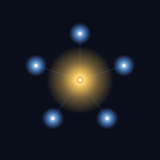
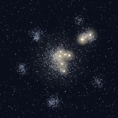
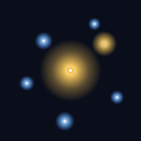
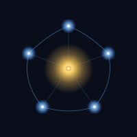
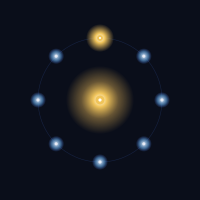
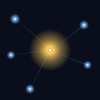

01 · Anchor

The mark is no longer a gradient blob — it's actual particles. Same DNA as #02 (asymmetric cluster, gold alpha satellite), but every "node" is now a cluster of real points, with different particle classes per node. The brand and the engine speak the same visual language.
~11,200 elements. Atoms are now trimodal — most are textural mass, ~30% are clearly mid-visible, and ~10% are discrete bright points the eye can pick out individually. Warm color dialed from saturated gold to pale cream. Light still emerges only where atoms meet, but the matter itself is now perceptible.

Side-by-side at hero size — the difference between "designed mark" and "mark that came out of the engine."

Kept here for reference. If a different skeleton speaks to you, say the word and I'll regenerate the particlised treatment for that one.



